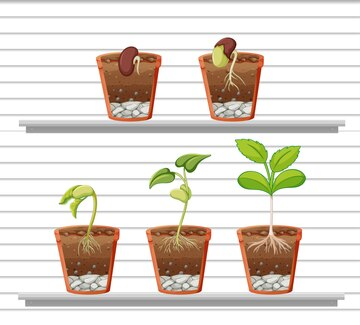

Step 1: Fill the Pot with Soil
Take your plant pot (included in the kit). Fill it with the provided soil until it's about 2 inches from the top. Make sure the soil is evenly spread, leaving some space for the seed to grow.

Step 2: Place the Seed in the Soil
Now, take the seed that comes with your kit and gently press it into the soil. Make sure it's planted at the right depth (usually about 1/2 inch deep). Cover it lightly with soil to protect it.
Step 3: Water the Plant Lightly
Next, water the plant gently. Use the included watering can or a small cup to add water to the soil. Be careful not to overwater; just keep the soil moist to help the seed germinate.
Step 4: Place in a Well-Lit Spot
Finally, place your potted plant in a well-lit area. Make sure it gets indirect sunlight. You can place it on a windowsill or somewhere that gets plenty of light throughout the day.